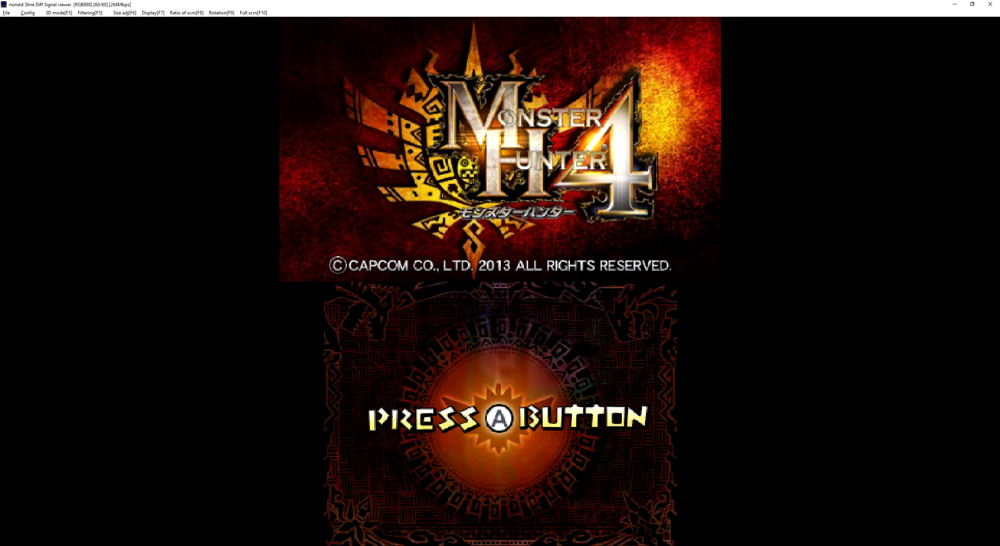

Hi, I'm not currently active in the modding business but I'm happy to try and support systems I've already sold. If you have an issue/question please DM me on Bluesky or Twitter.
This page will help you setup and troubleshoot your 3DS capture card. Note that I don't develop the viewer software and can't provide support for it. Below is a quick tutorial and the best usage based on my experience.
- squirrelectronics

To start, download the 3DS viewer program: Windows | Mac. (n3DS_view for Old 3DS, new3DS_view for New 3DS)
1. Use the included USB cable, or any working data cable, to plug in your 3DS to your computer.
2. Install the driver in the driver folder of the viewer program (install_driver.exe).
3. Once the driver is installed, launch the viewer program (n3DS_view.exe).
4. The card will initialize, and prompt you to type in the product key (included with your capture card). If this doesn't happen, try replugging your 3DS or restarting the program. You can also click File > Change the product key.
5. Your 3DS screens should now be showing up on the program :)
Config > Transfer Mode: If you need audio via the capture card, you will probably want to set this to RGB888 (full). Otherwise I recommend the (middle) or (light) option and using an audio cable via the headphone jack if you need audio through the PC.
Config > BackBuffer Size: Higher resolution will result in a crisper image but may require more processing power.
Config > Calibration: The correct values may vary between installs. I typically use default values but change the Lower Screen CLOCK to around 8. If you experience discoloration or artifacting, play around with these values until you get a crisp image.
Config > Separate the lower screen: Separates the screen into two windows for easier streaming capture.
Config > Sound settings: Select your sound device to hear audio via the capture card if you are running in one of the audio Transfer Modes.
Filtering: Pixel filter options.
Size adj: Scale the screen to a pixel perfect value.
Display: Settings for changing the positions of the screens.
Ratio of scrn: Change ratio between top and bottom screens.
If the screens aren't displaying, replugging the cable or restarting the program/computer typically works.
If you have audio stutter, your computer is struggling. Try increasing the Thread Priority > Sound or decreasing the BackBuffer Size. Otherwise, switch the a lighter Transfer Mode and just use an audio cable via the headphone jack.
If you have discoloration and artifacting, check the Config > Calibration.
If you have lost the product key, message me on Twitter, Etsy, or Ebay or try to recover it via the product key recovery tool.